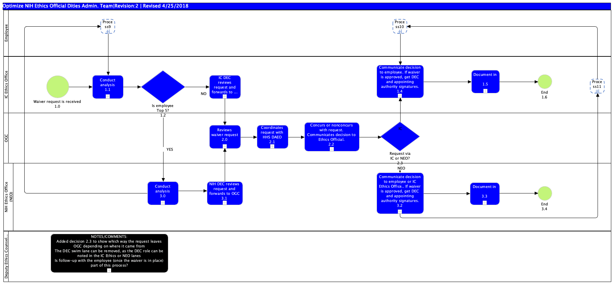

Publishing Project
Project Link
Page URL
with Name
Business Process Diagram - Waiver Process V1
link
Jump to:
Please select a model element
Optimize NIH Ethics Official Dities Admin. Team|Revision:2 | Revised 4/25/2018 : Freehand Shape
NOTES/COMMENTS: Added decision 2.3 to show which way the request leaves OGC depending on where it came from The DEC swim lane can be removed, as the DEC role can be noted in the IC Ethics or NEO lanes Is follow-up with the employee (once the waiver is in place) part of this process? : Sub-Process
Process11 : Sub-Process
Request via IC or NEO? 2.3 : Gateway
Process10 : Sub-Process
NIH DEC reviews request and forwards to OGC 3.1 : Sub-Process
Coordinates request with HHS DAEO 2.1 : Sub-Process
Conduct analysis 1.1 : Sub-Process
Concurs or nonconcurs with request. Communicates decision to Ethics Official. 2.2 : Sub-Process
Communicate decision to employee or IC Ethics Office.. If waiver is approved, get DEC and appointing authority signatures. 3.2 : Sub-Process
Conduct analysis 3.0 : Sub-Process
Reviews waiver request 2.0 : Sub-Process
Process9 : Sub-Process
End 3.4 : Start Event
Document in EMIS 3.3 : Sub-Process
Communicate decision to employee. If waiver is approved, get DEC and appointing authority signatures. 1.4 : Sub-Process
IC DEC reviews request and forwards to OGC 1.3 : Sub-Process
Document in EMIS 1.5 : Sub-Process
End 1.6 : Start Event
Is employee Top 5? 1.2 : Gateway
Waiver request is received 1.0 : Start Event
NIH Ethics Office (NEO) : Pool
Deputy Ethics Counselor (DEC) : Pool
OGC : Pool
Employee : Pool
IC Ethics Office : Pool

Model Elements
ID
Name
Description
Optimize NIH Ethics Official Dities Admin. Team|Revision:2 | Revised 4/25/2018 : Freehand Shape
NOTES/COMMENTS: Added decision 2.3 to show which way the request leaves OGC depending on where it came from The DEC swim lane can be removed, as the DEC role can be noted in the IC Ethics or NEO lanes Is follow-up with the employee (once the waiver is in place) part of this process? : Sub-Process
Process11 : Sub-Process
Request via IC or NEO? 2.3 : Data-Based Exclusive Decision/Merge (XOR)
Process10 : Sub-Process
NIH DEC reviews request and forwards to OGC 3.1 : Sub-Process
Coordinates request with HHS DAEO 2.1 : Sub-Process
Conduct analysis 1.1 : Sub-Process
Concurs or nonconcurs with request. Communicates decision to Ethics Official. 2.2 : Sub-Process
Communicate decision to employee or IC Ethics Office.. If waiver is approved, get DEC and appointing authority signatures. 3.2 : Sub-Process
Conduct analysis 3.0 : Sub-Process
Reviews waiver request 2.0 : Sub-Process
Process9 : Sub-Process
End 3.4 : Start Event
Document in EMIS 3.3 : Sub-Process
Communicate decision to employee. If waiver is approved, get DEC and appointing authority signatures. 1.4 : Sub-Process
IC DEC reviews request and forwards to OGC 1.3 : Sub-Process
Document in EMIS 1.5 : Sub-Process
End 1.6 : Start Event
Is employee Top 5? 1.2 : Data-Based Exclusive Decision/Merge (XOR)
Waiver request is received 1.0 : Start Event
NIH Ethics Office (NEO) : Pool
Deputy Ethics Counselor (DEC) : Pool
OGC : Pool
Employee : Pool
IC Ethics Office : Pool
Publishing Project